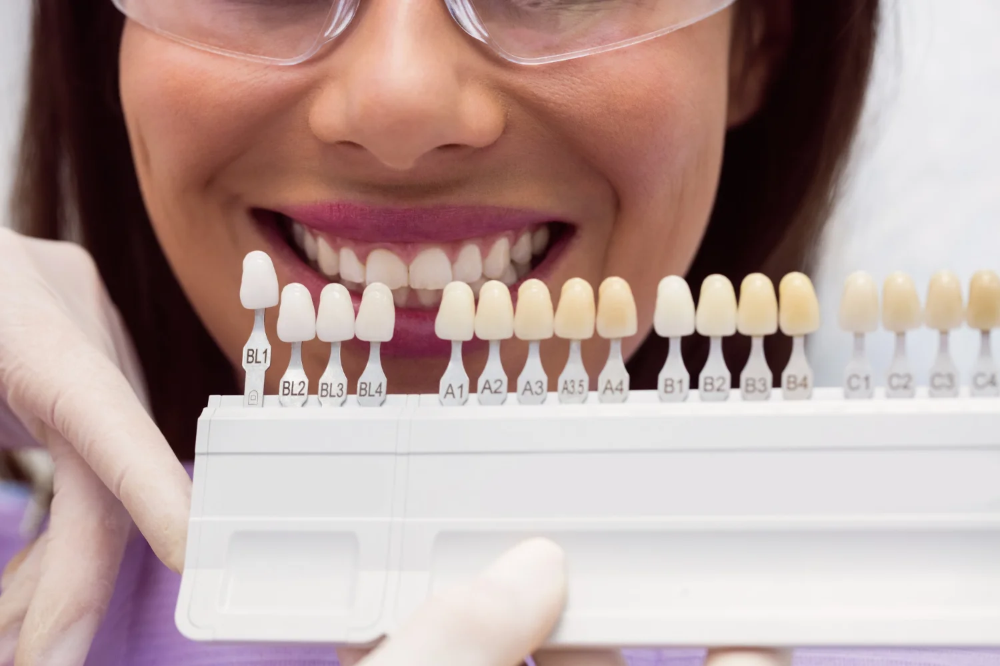

- Couronne céramique
Couronnes en Céramique : Pour un Sourire Éclatant et Naturel
Vous cherchez une solution à la fois belle et durable pour votre sourire ? Les couronnes en céramique peuvent être la réponse. Dans notre cabinet, nous utilisons cette technique moderne pour redonner vie à votre sourire avec des résultats qui semblent tout à fait naturels.
Bienvenue dans votre guide complet sur le traitement des caries dentaires. Que vous soyez ici parce que vous pensez avoir une carie, que vous voulez comprendre comment prévenir les caries, ou que vous êtes simplement curieux, vous êtes au bon endroit.
Qu’est-ce qu’une Couronne en Céramique ?
Une couronne en céramique est une restauration dentaire conçue pour recouvrir une dent endommagée ou un implant. Fabriquée en porcelaine ou en céramique de haute qualité, elle ressemble et se sent comme une vraie dent.
Avantages des Couronnes en Céramique
Nos couronnes en céramique offrent un aspect naturel inégalé, se fondant parfaitement avec vos autres dents. Elles sont parfaites pour les dents visibles, car elles imitent l’éclat et la forme de vos dents naturelles. De plus, elles sont bien tolérées par les personnes sensibles aux métaux.
Processus de Traitement
Notre processus est simple et rassurant. Nous commençons par une consultation pour évaluer vos besoins, suivie d’une préparation douce de la dent. La pose de la couronne est un processus précis, assurant un ajustement parfait et confortable.
Conclusion
Choisissez notre cabinet pour des couronnes en céramique et redécouvrez le plaisir d’un sourire naturel et éclatant. Nous sommes ici pour vous accompagner à chaque étape et vous assurer les meilleurs soins. Notre équipe est composée de professionnels expérimentés, dédiés à votre santé bucco-dentaire. Nous utilisons des techniques avancées et un approche bienveillante pour assurer votre confort et satisfaction. Contactez-nous pour découvrir comment nous pouvons illuminer votre sourire.
- Soin des gencives

Soins des Gencives : Prévention et Traitement
Les maladies des gencives sont des affections courantes mais sérieuses, pouvant affecter non seulement votre santé bucco-dentaire, mais également votre santé générale. Notre clinique est spécialisée dans la détection, la prévention et le traitement de ces maladies pour maintenir votre sourire en bonne santé.
Signes et Symptômes des Maladies des Gencives
- Gencives rouges, gonflées et douloureuses.
- Saignements lors du brossage.
- Récession gingivale.
- Sensibilité dentaire aux températures.
- Dents mobiles et douleur.
Nos Services de Soins des Gencives
Dans notre clinique, nous offrons des soins complets pour vos gencives, incluant le diagnostic, la prévention et le traitement des maladies gingivales. Nos procédures sont adaptées à chaque patient pour garantir les meilleurs résultats.
Prendre Rendez-Vous
Prenez rendez-vous pour une évaluation parodontale complète. Notre équipe dédiée est prête à vous accompagner dans la préservation de votre santé bucco-dentaire et générale.
- Facette dentaire

Facettes Dentaires : Transformez Votre Sourire avec Élégance
Les facettes dentaires sont une solution élégante pour améliorer votre sourire. Si vous êtes préoccupé par des dents tachées, ébréchées ou mal alignées, les facettes offrent une transformation esthétique rapide et impressionnante.
Qu’est-ce qu’une Facette Dentaire ?
Une facette dentaire est un revêtement mince qui se fixe sur la face avant de la dent pour améliorer son apparence. Ressemblant à s’y méprendre à de vraies dents, les facettes sont idéales pour rectifier divers problèmes esthétiques
Applications des Facettes Dentaires
- Corriger les dents tachées qui ne répondent pas au blanchiment.
- Réparer les dents ébréchées ou usées.
- Aligner les dents de travers ou malformées.
Types de Facettes Dentaires
Nous proposons des facettes en porcelaine et en résine composite. Chacune a ses avantages, et le Dr Cohen Ilanite vous guidera dans le choix du meilleur matériau pour vos besoins spécifiques.
Avantages des Facettes Dentaires
- Amélioration rapide de l’apparence des dents.
- Solution durable et résistante.
- Peu invasive et confortable.